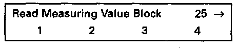
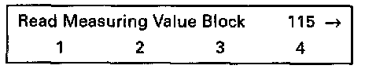
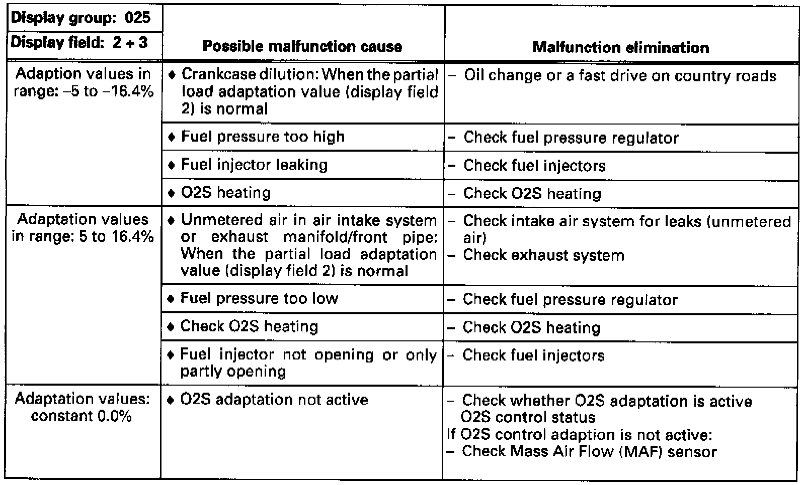
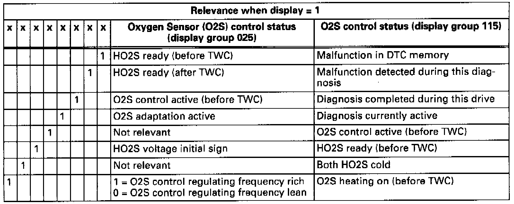
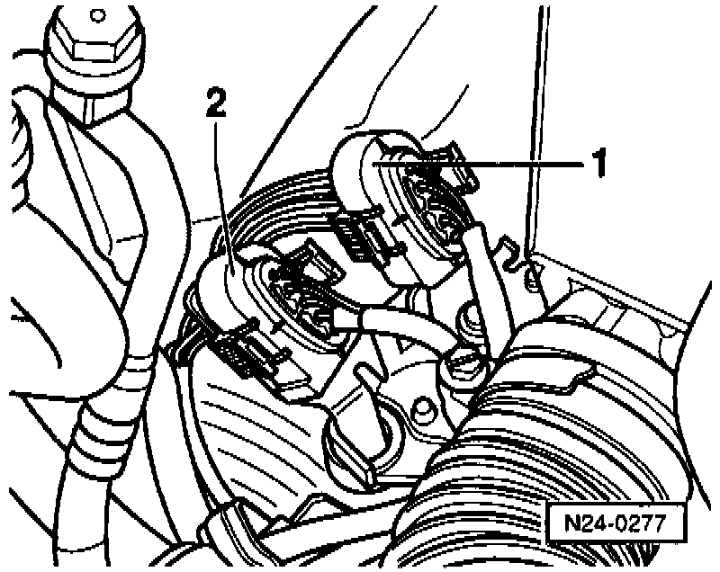
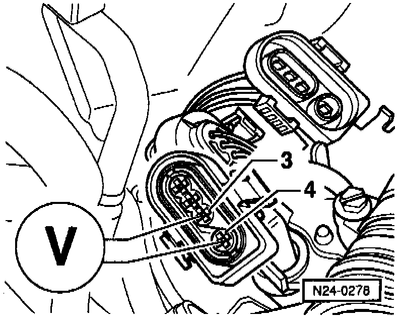
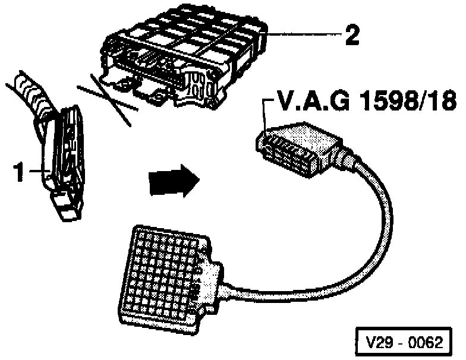

Before TWC
Special tools, testers and auxiliary items:- VAG 1551/1552 scan tool with VAG 1551/3 adapter cable.
- VAG 1598/18 test box.
- Multimeter (Fluke 83 or equivalent).
- Connector test kit VW 1594.
- Wiring diagram.
Test conditions:
- Coolant temperature at least 80°C (176°F)
Functional check:
- Engine running at idle.
- Connect VAG 1551/1552 scan tool and select "Engine Electronics" address word 01. Testing and Inspection
Indicated on display
- Press buttons -0- and -8- to select "Read Measuring Value Block" function 08 and press -Q- button to confirm input.
Indicated on display
- Press buttons -0-, -2- and -5- to input display group 025 and press -Q- button to confirm input.

Indicated on display (1-4 = Display fields)
- Check specifications for O2S control before three way catalytic converter (display fields 1-3).

Continuation:
If the specification in display field 1 is not attained, or the value does not fluctuate at least 2%:
- Perform a test drive to remove possible residue on HO2S and repeat check.
If the the specification in display field 1 is not attained even after a road test, or the value does not fluctuate at least 2%:
- Check the O2S heating. Oxygen Sensor (O2S) Heating
If the value displayed in display field 1 remains constant:
- Press -C- button.
- Press buttons -1-, -1- and -5- to input display group 115 and press -Q- button to confirm input.

Indicated on display (1-4 = Display fields)
- Note HO2S voltage in display field 3.

- Press -> button.
- Press buttons -0- and -6- to select "End Output" function 06 and press -Q- button to confirm input.
- Switch ignition off.
Evaluating display group 025

Evaluating display group 115

Relevance of values in 8-digit number block

Checking basic voltage

- Disconnect 4-pin connector -1- (black) to HO2S -G39- (before three way catalytic converter).
Oxygen Sensor - Before TWC:

- Connect multimeter with test leads from VW 1594 to measure voltage at ECM connector terminals 3 and 4.
- Start engine and measure basic voltage.
Specification: 0.40-0.50 volts.
- Switch ignition off.
If the specification is not attained:
- Check HO2S wiring.
If the specification is attained:
- Replace HO2S -G39- (before three way catalytic converter).
Checking HO2S wiring:

- Connect VAG 1598/18 test box to ECM wiring harness (arrow).

- Disconnect 4-pin connector-1- (black) to HO2S -G39- (before three way catalytic converter).

- Check wiring between test box and 4-pin connector to ECM for open circuit according to wiring diagram.
- Terminal 3 and test box socket 42
- Terminal 4 and test box socket 20
Resistance: max. 1.5 ohms
- Additionally, check wiring at 4-pin connector for short circuit to one another.
Terminal 4 and test box socket 42
Specification: infinite ohms
- Check shielding for short circuit to HO2S wiring according to wiring diagram.
- Terminal 4 and test box socket 56
- Terminal 3 and test box socket 56
Specification: infinite ohms
If no wiring malfunction is detected:
- Replace ECM -J220-.
- Read the readiness code. If DTC memory has been erased, verify repair via appropriate display group See Readiness code, creating. Testing and Inspection